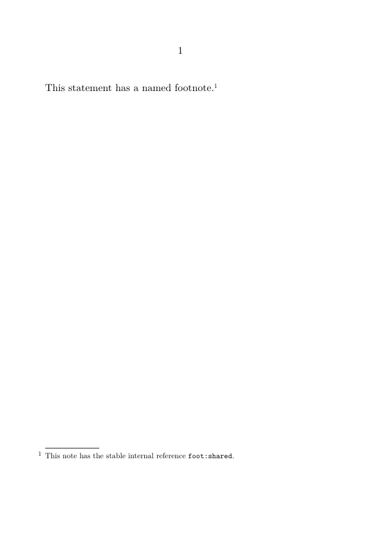
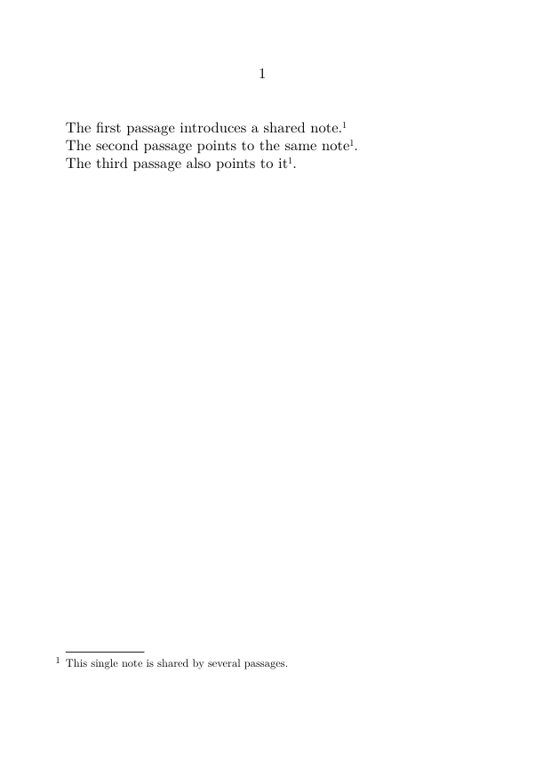
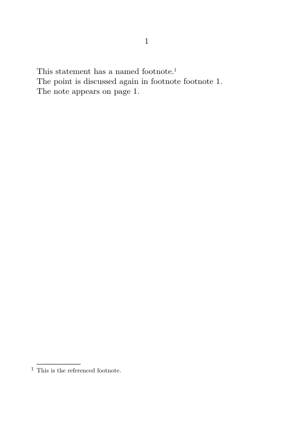
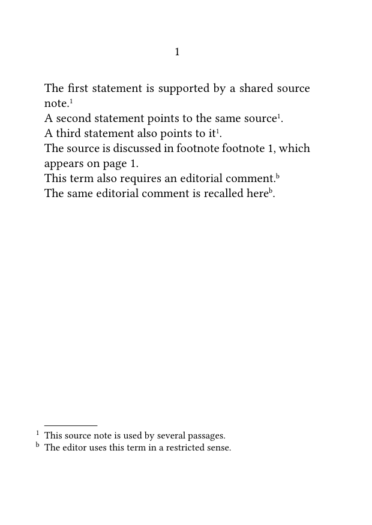

Footnotes in ConTeXt · Overview · Tutorial · How-to guides · Referring to a footnote more than once · Reference · Explanation · Glossary
🚧 Under construction — This guide is currently being revised. Please do not modify its source code while this banner remains in place.
Guide 1 — Basic note operations · How-to guides overview · Next: Separating a note mark from its text
Contents
- 1 1. Goal
- 2 2. Create a named footnote
- 3 3. Print the same note mark again
- 4 4. Refer to the note number or page
- 5 5. Create the note before recalling it
- 6 6. Control punctuation and spacing
- 7 7. Use the correct note series
- 8 8. Common mistakes
- 9 9. Complete example
- 10 10. What this guide has established
- 11 11. Next steps
1. Goal
Use one logical footnote from several points in the running text without duplicating its entry.
This is useful when:
- the same source supports several statements;
- two passages require the same explanation;
- a recurring term should point to one shared note;
- the note text should be written only once in the source.
The method has two steps:
- assign a stable internal reference to the footnote;
-
repeat its note mark with
\note.
Result
One logical note may have several visible note marks but only one note entry.
2. Create a named footnote
Add an optional stable internal reference to the ordinary \footnote command:
\footnote[reference]{note text}
2.1. MWE: create a named footnote
-
\setuppapersize[A6] \starttext This statement has a named footnote.\footnote[foot:shared] {This note has the stable internal reference \type{foot:shared}.} \stoptext
-

The string foot:shared is an internal identifier. It is not printed in the document.
Use reference names that describe the function or content of the note:
foot:source foot:translation-choice foot:terminology foot:editorial-comment
Avoid references based on printed numbers
A name such as foot:17 may become misleading when notes are inserted, deleted, or reordered.
Prefer a semantic name that remains meaningful even when the printed numbering changes.
3. Print the same note mark again
Use:
\note[reference]
with exactly the same reference that was assigned to the original footnote.
3.1. MWE: one entry and several marks
-
\setuppapersize[A6] \starttext The first passage introduces a shared note.\footnote[foot:common] {This single note is shared by several passages.} The second passage points to the same note\note[foot:common]. The third passage also points to it\note[foot:common]. \stoptext
-

The first command creates:
- the initial note mark;
- the note entry;
- the stable internal reference.
Each later \note[foot:common] prints the existing mark again.
It does not:
- create another entry;
- duplicate the note text;
- advance the footnote counter.
One logical note, several visible marks
The repeated marks all refer to the same note entry and the same stable internal reference.
4. Refer to the note number or page
The command \note repeats the note mark itself.
Sometimes the prose should instead mention:
- the printed note number;
- the page on which the note appears.
4.1. Refer to the printed note number
Use:
\in{footnote}[reference]
4.2. Refer to the page containing the note
Use:
\at{page}[reference]
4.3. MWE: textual references to a note
-
\setuppapersize[A6] \starttext This statement has a named footnote.\footnote[foot:reference] {This is the referenced footnote.} The point is discussed again in footnote \in{footnote}[foot:reference]. The note appears on \at{page}[foot:reference]. \stoptext
-

The printed number may change when the document is edited, but the stable internal reference remains unchanged.
4.4. Choose the appropriate command
| Command | Use it when… | Result |
|---|---|---|
\note[reference]
|
the same note mark must appear again in the running text | prints the existing note mark |
\in{footnote}[reference]
|
the prose must mention the printed note number | prints a textual reference to the current number |
\at{page}[reference]
|
the prose must identify the page on which the note appears | prints a page reference |
These commands use the same stable internal reference but perform different tasks.
5. Create the note before recalling it
The named note should normally be created before its mark is repeated.
A clear source structure is:
First passage.\footnote[foot:shared]
{Shared note text.}
Later passage\note[foot:shared].
Forward references may require additional processing and make the source harder to follow.
Recommended practice
Create the note where the reader first needs it, then recall the same mark later.
6. Control punctuation and spacing
A note mark should normally follow immediately after the word or punctuation to which it belongs.
For example:
This statement requires a note.\footnote[foot:shared]
{Shared note text.}
When recalling the note mark:
The same point appears here\note[foot:shared].
Do not insert an ordinary space before \footnote or \note unless the typographical design explicitly requires one.
Check the punctuation policy of the publication
Whether note marks appear before or after punctuation is an editorial convention.
Choose one policy and apply it consistently throughout the document.
7. Use the correct note series
The abbreviated form:
\note[reference]
refers to the predefined footnote series.
For a custom note series, specify both the series and the stable internal reference:
\note[series][reference]
7.1. MWE: repeat a mark from a custom series
-
\setuppapersize[A6] \definenote [EdNote] [footnote] \starttext This passage contains an editorial note.\EdNote[ed:terminology] {This editorial note has a stable internal reference.} The same editorial-note mark appears again here \note[EdNote][ed:terminology]. \stoptext
-

In:
\note[EdNote][ed:terminology]
the first argument identifies the note series, and the second identifies the logical note within that series.
8. Common mistakes
8.1. Using a different reference name
These two commands do not refer to the same logical note:
\footnote[foot:source]{note text}
\note[foot:sources]
The references foot:source and foot:sources are different.
Use exactly the same spelling, capitalization, and punctuation.
8.2. Repeating the entire footnote command
This creates two separate notes:
First passage.\footnote
{Shared explanation.}
Second passage.\footnote
{Shared explanation.}
Use one named footnote and recall its mark instead:
First passage.\footnote[foot:shared]
{Shared explanation.}
Second passage\note[foot:shared].
8.3. Confusing a repeated mark with a textual cross-reference
Use \note when the note mark itself must be repeated.
Use \in when the prose must mention the printed note number.
Use \at when the prose must mention the page containing the note.
8.4. Omitting the series name for a custom note
For a custom series, this form refers to the ordinary footnote series:
\note[ed:comment]
Use:
\note[EdNote][ed:comment]
Most frequent cause of failure
A repeated note mark will not work as intended if its series name or stable internal reference differs from the one used when the note was created.
9. Complete example
The following MWE combines:
- one ordinary named footnote;
- two later occurrences of the same mark;
- a textual reference to the printed note number;
- a reference to the page containing the note;
- one custom editorial-note series;
- a repeated mark from that custom series.
9.1. MWE: repeated marks in ordinary and custom series
-
\setuppapersize[A6] \setupbodyfont [libertinus,10pt] \definenote [EdNote] [footnote] \setupnotation [footnote] [numberconversion=numbers] \setupnotation [EdNote] [numberconversion=characters] \starttext The first statement is supported by a shared source note.\footnote[foot:source] {This source note is used by several passages.} A second statement points to the same source\note[foot:source]. A third statement also points to it\note[foot:source]. The source is discussed in footnote \in{footnote}[foot:source], which appears on \at{page}[foot:source]. This term also requires an editorial comment.\EdNote[ed:term] {The editor uses this term in a restricted sense.} The same editorial comment is recalled here \note[EdNote][ed:term]. \stoptext
-

Compile the example and check that:
- the ordinary source note creates only one note entry;
- its numerical mark appears three times;
- the current note number can be mentioned in the prose;
- the page containing the note can be referenced;
- the editorial note belongs to a separate series;
- the editorial-note mark can also be repeated;
- no repeated mark creates a duplicate entry.
10. What this guide has established
To refer to one footnote more than once:
-
assign a stable internal reference with
\footnote[reference]{...}; -
repeat the same mark with
\note[reference]; -
use
\in{footnote}[reference]to mention the printed number; -
use
\at{page}[reference]to mention the page; -
use
\note[series][reference]for a custom note series.
The central principle is that one logical note may have several visible note marks but only one note entry.
11. Next steps
11.1. Continue with the next basic operation
- Format footnotes
- Place footnotes at the end of a section or chapter
- Define and manage multiple note series
11.3. Consult the documentation
- Consult the note-command reference
- Understand the note mechanism
- Check the terminology used in the footnote documentation
Guide 1 — Basic note operations · How-to guides overview · Next: Separating a note mark from its text
Footnotes in ConTeXt · Overview · Tutorial · How-to guides · Referring to a footnote more than once · Reference · Explanation · Glossary